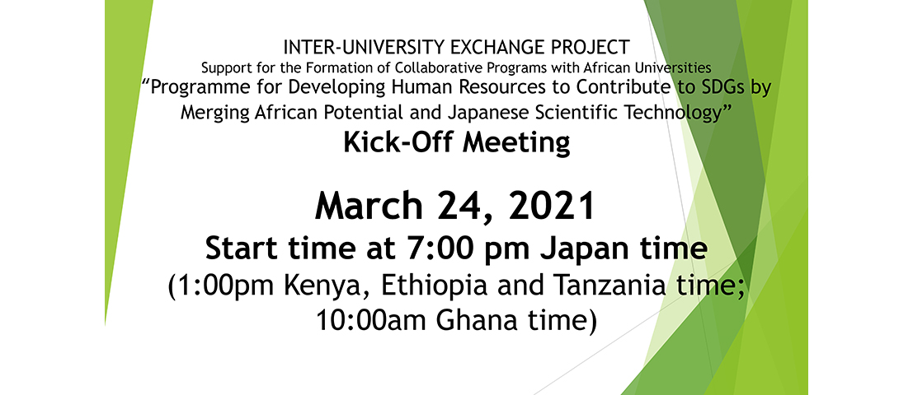
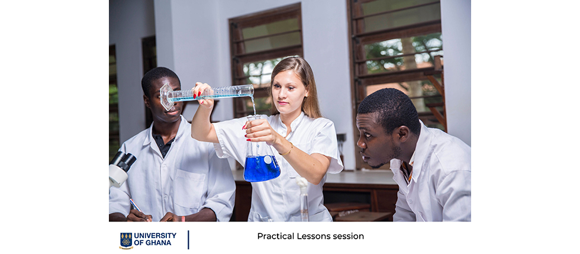

- 
-

-

- 
2020/12/5
文部科学省「大学の世界展開力強化事業-アフリカ諸国との大 学間交流形成事業-」に採択されました。
2021/3/22
当Webサイトを公開しました。
2021/3/24
オンラインにて当プログラムのキックオフミーティングを開催します。
本プログラム「アフリカの潜在力と日本の科学技術融合によるSDGs貢献人材育成プログラム」は、文理融合の教育研究を特徴とする宇都宮大学大学院地域創生科学研究科における、農学部及び国際学部関係のプログラムによって、アフリカにおいて食料生産から流通・加工・販売システムまで含めた高生産性農業を中心として、地域社会の潜在力や社会構造に基づく持続的発展のあり方を理解し、日本とアフリカの共同事業に貢献できる人材育成を目的としています。
「UU-A」は本プログラム「アフリカの潜在力と日本の科学技術融合によるSDGs貢献人材育成プログラム」の略称です。宇都宮大学（Utsunomiya University）とアフリカの大学(African universities）を表しており、アフリカとの大学との連携強化を目指し、このような略称としました。